Vinyl Chord: A Revolutionary Record Store
Public Pool, Brooklyn, New York, US, 2023.
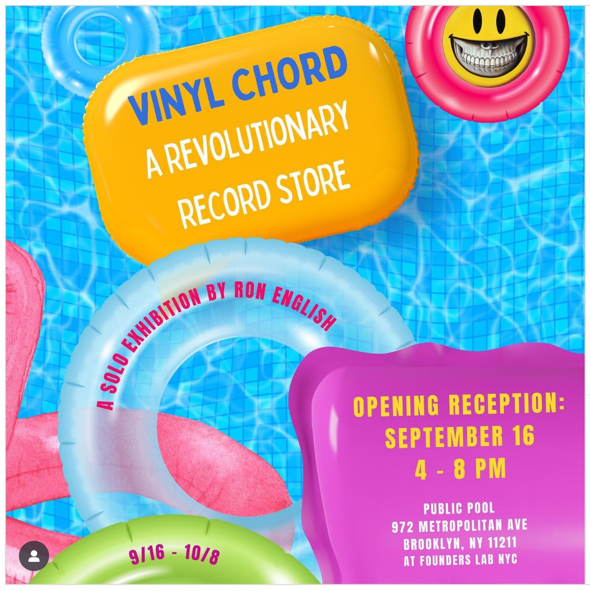
Notes
Vinyl Chord: A Revolutionary Record Store was an immersive pop-installation at Public Pool in Brooklyn, created in collaboration with Ethan Cohen Projects and Founders Lab NYC.
Presented as a conceptual record store, the project brought together vinyl artworks, customized record covers, POPaganda characters, and music-culture references, turning the space into a hybrid of gallery, store, and counter-culture archive.
As a 2023 Brooklyn presentation, the exhibition is a useful record of how Ron English extended his POPaganda language into music-adjacent installation, edition culture, and a retail-like environment built around collecting, parody, and display.
Images from the Exhibition
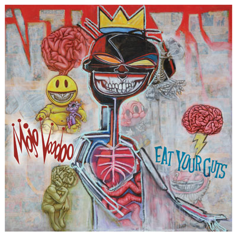
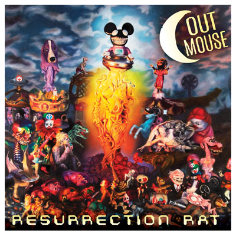
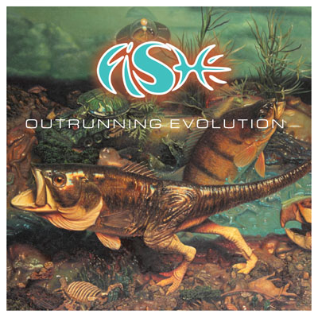
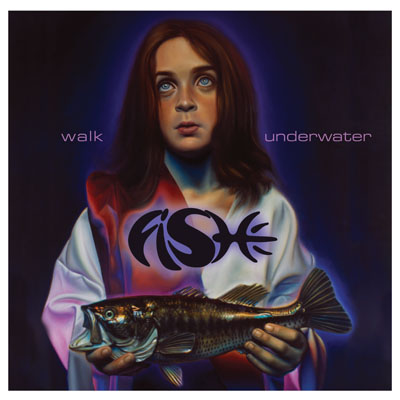
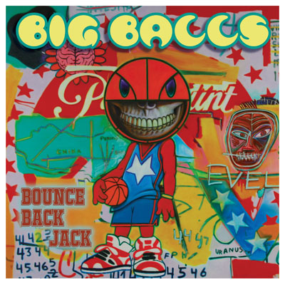
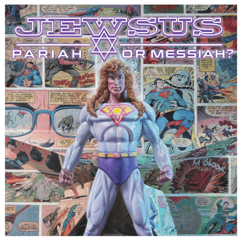
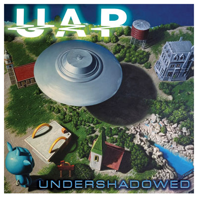
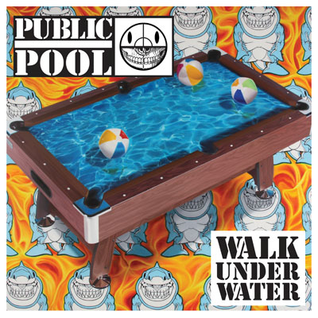
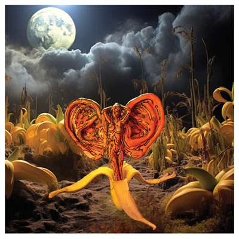
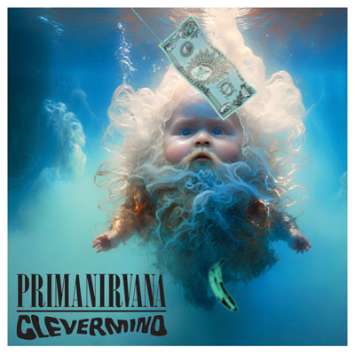
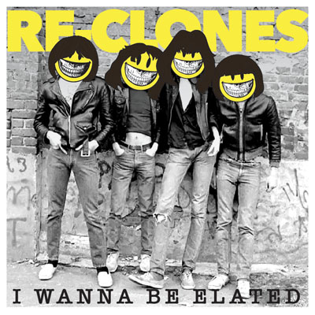
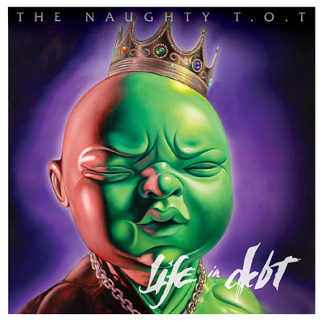
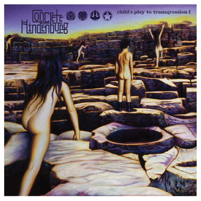
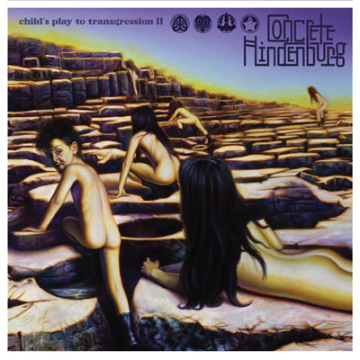
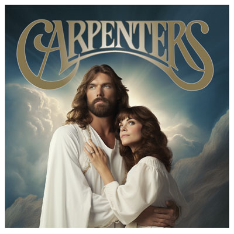
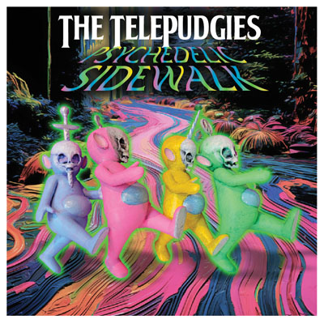
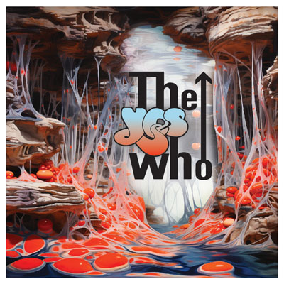
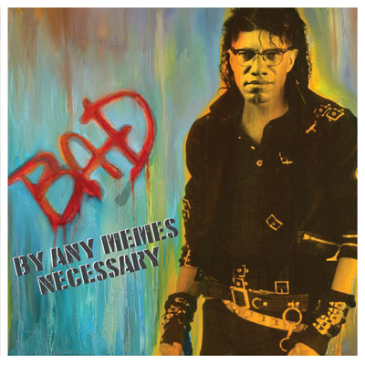
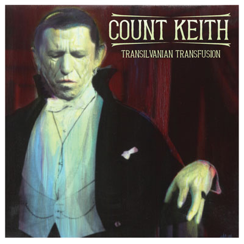
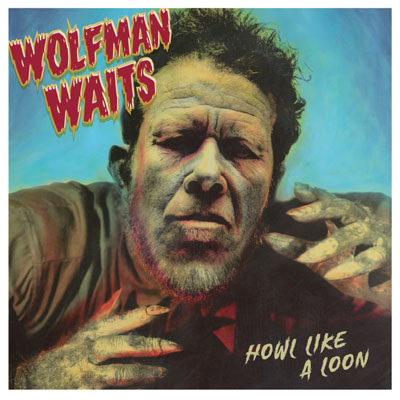
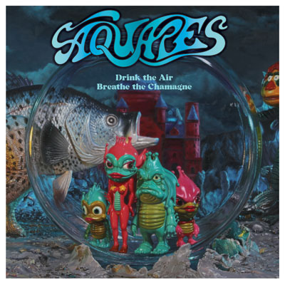
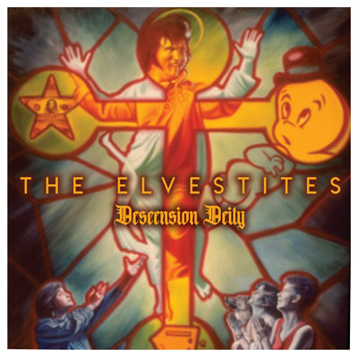
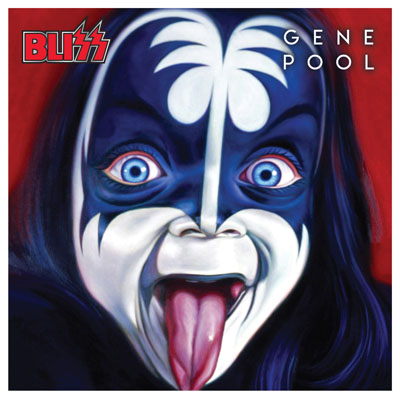
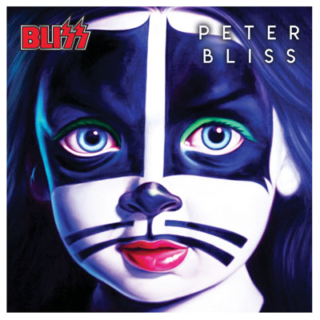
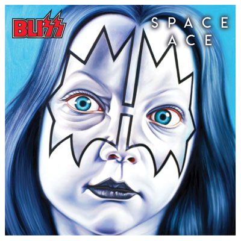
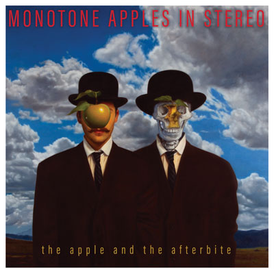
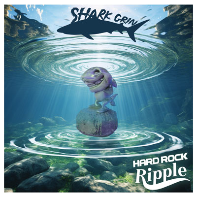
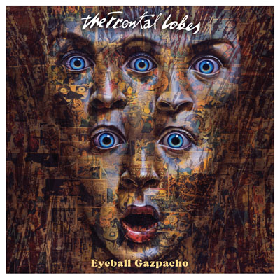
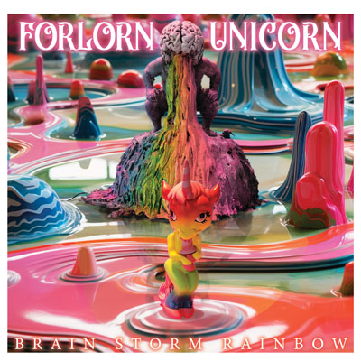
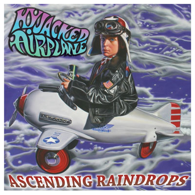
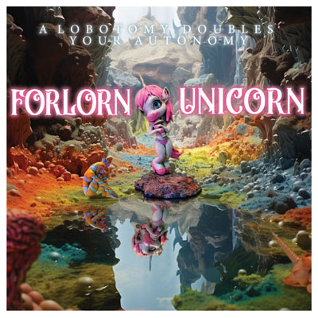
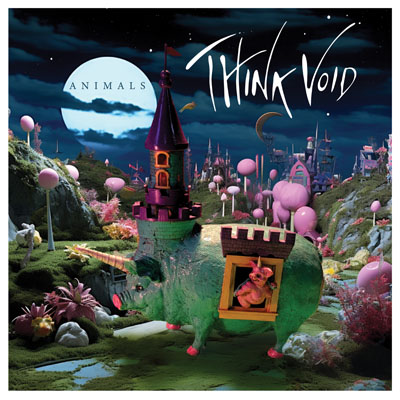
Sources
- Ethan Cohen Fine Arts — exhibition page for Vinyl Chord: A Revolutionary Record Store.
- Public Pool — exhibition page for Vinyl Chord: A Revolutionary Record Store.
- Public Pool — exhibitions archive.
- Artforum ArtGuide — exhibition listing.
- StreetArtNews — coverage of Vinyl Chord: A Revolutionary Record Store.